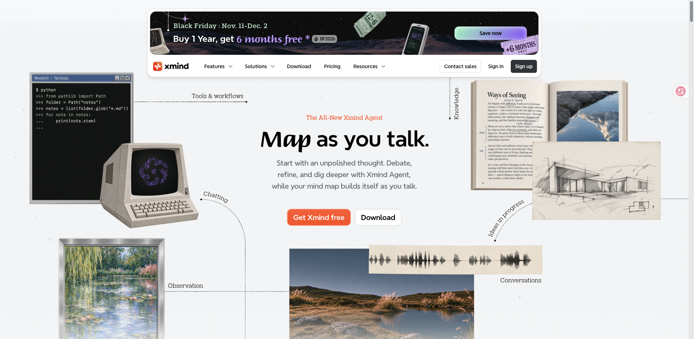

把散落的想法收成一棵向外发散的树，一眼看清结构。
复刻一张「产品发布计划」导图
Xmind 的视觉语言：从中心胶囊甩出的有机曲线，根部粗、梢部细，像树枝一样自然收窄；一级主题是有底色的彩色胶囊，二级主题退成纯文字；节点旁挂 ✓ / ⏰ / ⭐ 这类小图标和 01–05 编号，让信息密度上来了也不乱。

一个思维导图应用，核心动作只有一个：从一个中心主题往外长枝。围绕这个动作它加了不少现代能力 —— 从语音、Markdown、文档直接生成导图，用 Xmind Agent 边聊边把导图长出来，同一张图还能切到时间线 / 甘特视图看任务依赖，并且可以直接用导图做演示。
谁在用：需要把会议、访谈、笔记整理成结构的项目经理，以及做头脑风暴、写方案的人。